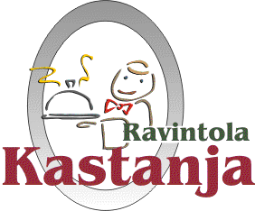

| Etusivu
Ravintola Kastanja |
|  |
- Ravintola Kastanja on suosittu ja xviihtyisä, yksityisessä omistuksessa oleva seurustelun ja hyvän ruuan ravintola keskellä Kotikaupunkia. Ravintola Timjami on sisustettu pääosin "vanhanaikaisesti" pyrkien säilyttämään vanhan talon lämpö ja tunnelma. Ravintolassa on kolme huonetta, drinkkibaari, yksi kabinetti ravintolakerroksessa ja uutuutena kaksi yläkerrassa sekä kesäisin myös pieni parveke, josta on hyvä näköala suoraan kaupungin kävelykadulle. Ravintolassa on noin 150 asiakaspaikkaa.
- Ravintola Kastanja tarjoaa erinomaiset puitteet tapaamisille, pienille kokouksille, merkkipäivien viettämiseen ja mukavaan seurusteluun ystävien kanssa. Otamme myös mielellämme huomioon erityistoivomuksianne ja teemme halutessanne tarjouksen.
TERVETULOA!
|